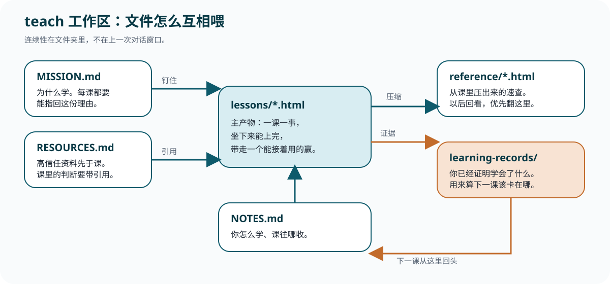

学知识
难度是敌人。它吃工作记忆。只放练这项技能需要的知识，先讲清楚再练。
Reference
回看这一页。分清该不该打 /teach、第一句怎么写、目录里每份文件干什么、本库落在哪。
| 你想要 | 伸手拿 |
|---|---|
| 连续学一个主题，session 要能叠起来 | /teach（用户显式触发） |
| 当前会话里把一个想法讲清楚 | 直接问 |
| 上一条没打中，要它重讲 | /wait-what |
| 把已有想法问锋利 | /grill-me |
| 一份带引用的调查文档 | /research |
| grilling 中途要学新东西 | 先 /handoff，再在教学工作区 /teach |
| 场景 | 斜杠怎么写 | 同一条消息还要说 |
|---|---|---|
| 还没想好主题 | /teach |
让它先问为什么学。目录说死。 |
| 日常技能 | /teach 尤克里里弹唱 |
为什么学、会什么、不会什么、指定教材/视频、不要选择题、要能对着做的步骤。 |
| GitHub 仓库 | /teach owner/repo 或仓库 URL |
教学目录另开，不要写进上游仓库。要地图还是精读，先报已知。 |
| 先钉资料 | /teach + 「先不要写 lesson」 |
点名必须用的书/文档/视频/社区。没有引用就重写。 |
| 续课 | /teach next lesson |
在已有工作区里开。太深太浅、要复习不要新课，当场说。 |
| 路径 | 干什么 | 你怎么用 |
|---|---|---|
| MISSION.md | 为什么学 | 空着就先问。每课都要能指回这里。 |
| RESOURCES.md | 高信任资料 | Knowledge / Wisdom 分组。课里的判断从这里引。 |
| lessons/*.html | 教学主产物 | 一课一事。第一次学打开它。 |
| reference/*.html | 压缩精华 | 以后回看走这里。 |
| learning-records/ | 已证明学会了什么 | 像 ADR。覆盖 ≠ 学会。用来算下一课。 |
| assets/ | 可复用组件 | 共用样式是第一块零件。图、模拟器往这里放。本库新课默认不加测验脚本。 |
| NOTES.md | 教学偏好 | 你怎么学、课往哪收，写在这里给后续 session。 |

难度是敌人。它吃工作记忆。只放练这项技能需要的知识，先讲清楚再练。
难度是工具。提取、间隔、交错（交错只用于技能）。反馈环尽量短。
当下能想起叫流畅，容易骗你。要的是存储强度：过一周还在。
需要判断的问题，答完指向社区。用户拒绝加入社区，就停在这一步。
| 上游 teach | 本库 teach-me |
|---|---|
| 当前目录就是工作区 | 一门课一个子目录：课程/某课/ |
| assets/ 里放共用样式 | 样式和外链脚本放在该课 assets/；新课默认不加测验 |
| 课 > 1 节时自己链来链去 | 同时有 lessons/ 和 reference/ 就注入 course-nav.js |
| 精读对象由课自己决定 | 点名且要对着学的 skill / prompt，嵌中文；讨论课不嵌全文 |
覆盖层正文：playbook/teach-me.md。精读分支：嵌入权威中文 prompt。
对照清单来自 docs/productivity/teach.md。agent 执行规则仍看 SKILL.md。